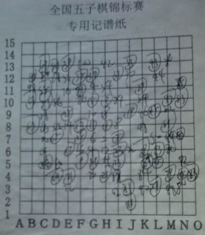

如烟真是辛苦了。
如烟真是辛苦了。转自中国连珠网,原文地址http://www.rifchina.com/Article/ShowArticle.asp?ArticleID=6521
肖斌你好
首先祝即将举行的第二届全国智力运动会五子棋比赛圆满成功！
在此我仅代表个人就“鸡蛋里面的骨头”谈几点看法：
一.关于记谱
棋手记谱已是五子棋正式专业比赛中完成比赛不可缺少的一部分，也就是说棋手在完成一局比赛的的同时要上交完整，清晰的棋局记录。在裁判的紧盯下，棋手一手棋一记录似乎达到了，可“完整清晰”……？我有幸整理过几次全国赛棋谱，对一些记录的“狂草”大为头痛，真不知我们的裁判如何验收的，也许是我老眼晕花。个别棋手为了应付裁判局中的紧盯，落完子后不管对与否随意在谱纸上“画”一下，而我们的裁判在对局终了时根本不管棋局记录的完整以清晰。我觉得很不正常，棋局记录是档案，不完整不清晰就失去了作用变成了一种形式主义的浪费。因此我认为对于这问题的处理裁判应：1、裁判是比赛的配角，为了保障棋手比赛思路的完整，高质量的棋局，尽量少打断比赛，如提醒记谱之类的。2、比赛终局是裁判在记分的同时要检查一下一对棋手的棋局记录，要求裁判一手一手核对，那是不现实的，但表格的填写、字迹的清晰、两人记录的大概形状还是可以直观的。如果不合格裁判有责任让棋手填写完整或重写。3、另外棋局记录有提供第三者阅读的功能，可现在的记录的格式，第三者阅读时对于谁执黑谁执白还得翻译，也就是说表格中的黑方白方只是假的，得根据交换栏中的记录来确定黑白的真实。为何不能要求棋手在交换后开始记录，这样表格中黑白是真实的，使第三者一目了然。4、记谱纸的的格线由于比棋手记录的笔色深或相近，也使棋局记录笔迹不清。因此我认为记录纸中的格线应印浅些，或用以蓝黑反差大的颜色。5、全国邀请赛五届、全国锦标赛也五届了，可我们棋手棋局记录还没存在差异，正确的奇数画圈，可就是有个别的偶数画圈，有的奇偶都不画，有的都画，下面的表格填写也有出入，问题还出现在经常参加比赛的棋手上，为了五子棋的标准化我们的裁判应帮助纠正。

二.关于“零迟”
由于我们的五子棋发展相对其他棋牌来说还很落后，因此我希望对我们参赛的棋手应该人情化些，向全锦赛棋手大多是自费的，因此我认为最后别采用“零迟”，恢复迟到15分钟设置。全国智运会棋手大多是地方出资的，对棋手要求严格采用“零迟”还是比较恰当的。（“零迟”--棋手迟到不论时间长短，就取消本轮比赛资格）
三.关于直播
要说我们的五子棋裁判够累的，除了组织好比赛外，还得第一时间向外传送比赛消息。但这细究起来有点让人忐忑：传消息是裁判的义务？五子棋裁判轻松？即使是有义务传消息，中国棋院组织的比赛就应第一时间传到中国棋院的官网啊，可……？
四.棋手的姓名的正确是对棋手的尊重，可今年全锦赛上，曹冬的冬在提出有错的情况下（曹冬是著名棋手可年年写错），从第一轮到排名赛十轮编排记录加上媒体宣传中一直“曹东”，编排程序不能改字？改个字很难？宣传稿不审？
这四点都不是原则问题，但还是希望有所改善，使中国五子棋比赛趋向完美。
［此帖子已被 土木 在 2011-10-25 22:37:01 编辑过］
可啥可啊？信都写了，爱五子棋网不敢写啊？
鲜花鸡蛋板砖照收~
［此帖子已被 小丸.net 在 2011-10-25 22:40:11 编辑过］
还好，这次智运会是和腾讯，腾讯是和爱5，还好，这次爱5名正言顺，没有可....

引用：
原文由 小丸.net 发表于 2011-10-25 22:39:53 :
要是谁把上面那张谱复出来，并写出这是谁谁谁什么时候的谱，经过当事人证实无误，有威望1奖励+100金+鲜花20
试一下：大概这样，有错
［此帖子已被 掌棋如烟 在 2011-10-25 23:58:49 编辑过］
［ 虎哥 于 2011-10-26 0:03:59 时花20金币送鲜花一朵］
［ 【掌棋】夏天 于 2011-10-26 8:30:26 时花20金币送鲜花一朵］
［ 小丸.net 于 2011-10-27 10:01:55 时奖励此帖[金币加 100 威望加1］
“由于我们的五子棋发展相对其他棋牌来说还很落后，因此我希望对我们参赛的棋手应该人情化些”
这句话。。。额。。。有逻辑关系么？
认为零迟到规定没有问题，既然报名比赛就要遵守各项规章，和自费公费有关系么？
写对棋手的名字是对棋手最起码的尊重。可能是我从幼儿园开始就一直被人写错名字，所以对这种事比较敏感，相信有人也有同样的感受。
“3、另外棋局记录有提供第三者阅读的功能，可现在的记录的格式，第三者阅读时对于谁执黑谁执白还得翻译，也就是说表格中的黑方白方只是假的，得根据交换栏中的记录来确定黑白的真实。为何不能要求棋手在交换后开始记录，这样表格中黑白是真实的，使第三者一目了然。”
一目了然？？？谁开局呀？谁给后面再来个备注不成？
棋手记谱已是五子棋正式专业比赛中完成比赛不可缺少的一部分，45分钟的对局时间，你还指望录成什么样？太吭爹了
［ 【掌棋】夏天 于 2011-10-26 8:50:51 时花20金币送鲜花一朵］
棋手记谱，根本不指望
引用：
原文由 小丸.net 发表于 2011-10-25 22:39:53 :
要是谁把上面那张谱复出来，并写出这是谁谁谁什么时候的谱，经过当事人证实无误，有威望1奖励+100金+鲜花20［此帖子已被 小丸.net 在 2011-10-25 22:40:11 编辑过］
qplist.asp?qpid=3714&menu=4&returnmenu=5
如烟真是辛苦了。
根据定式把前23手照着图片核查一下，然后再根据一般行棋思路找到24到27，然后你想啊，这图片上都有锦标赛的标题，原作者为了方便起见肯定是找的最近的，那iwzq是有直播的，把前27手棋谱在谱库里一查，就一个，对照一下没问题，那就是了，2分钟。
［此帖子已被 屏蔽 在 2011-10-26 12:19:29 编辑过］
［ 掌棋如烟 于 2011-10-27 20:06:21 时花20金币送鲜花一朵］
引用：你还没意识到你出卖了某人吗.....?
原文由 屏蔽 发表于 2011-10-26 12:14:06 :引用：
原文由 小丸.net 发表于 2011-10-25 22:39:53 :
要是谁把上面那张谱复出来，并写出这是谁谁谁什么时候的谱，经过当事人证实无误，有威望1奖励+100金+鲜花20［此帖子已被 小丸.net 在 2011-10-25 22:40:11 编辑过］
qplist.asp?qpid=3714&menu=4&returnmenu=5
根据定式把前23手照着图片核查一下，然后再根据一般行棋思路找到24到27，然后你想啊，这图片上都有锦标赛的标题，原作者为了方便起见肯定是找的最近的，那iwzq是有直播的，把前27手棋谱在谱库里一查，就一个，对照一下没问题，那就是了，2分钟。
［此帖子已被 屏蔽 在 2011-10-26 12:19:29 编辑过］
引用：出卖的到底是兰兰还是葛帅呢
原文由 掌棋宣传员 发表于 2011-10-26 13:14:08 :引用：你还没意识到你出卖了某人吗.....?
原文由 屏蔽 发表于 2011-10-26 12:14:06 :引用：
原文由 小丸.net 发表于 2011-10-25 22:39:53 :
要是谁把上面那张谱复出来，并写出这是谁谁谁什么时候的谱，经过当事人证实无误，有威望1奖励+100金+鲜花20［此帖子已被 小丸.net 在 2011-10-25 22:40:11 编辑过］
qplist.asp?qpid=3714&menu=4&returnmenu=5
根据定式把前23手照着图片核查一下，然后再根据一般行棋思路找到24到27，然后你想啊，这图片上都有锦标赛的标题，原作者为了方便起见肯定是找的最近的，那iwzq是有直播的，把前27手棋谱在谱库里一查，就一个，对照一下没问题，那就是了，2分钟。
［此帖子已被 屏蔽 在 2011-10-26 12:19:29 编辑过］

引用：当然是假白方的记录了。
原文由 奇林 发表于 2011-10-26 22:47:42 :引用：出卖的到底是兰兰还是葛帅呢
原文由 掌棋宣传员 发表于 2011-10-26 13:14:08 :引用：你还没意识到你出卖了某人吗.....?
原文由 屏蔽 发表于 2011-10-26 12:14:06 :引用：
原文由 小丸.net 发表于 2011-10-25 22:39:53 :
要是谁把上面那张谱复出来，并写出这是谁谁谁什么时候的谱，经过当事人证实无误，有威望1奖励+100金+鲜花20［此帖子已被 小丸.net 在 2011-10-25 22:40:11 编辑过］
qplist.asp?qpid=3714&menu=4&returnmenu=5
根据定式把前23手照着图片核查一下，然后再根据一般行棋思路找到24到27，然后你想啊，这图片上都有锦标赛的标题，原作者为了方便起见肯定是找的最近的，那iwzq是有直播的，把前27手棋谱在谱库里一查，就一个，对照一下没问题，那就是了，2分钟。
［此帖子已被 屏蔽 在 2011-10-26 12:19:29 编辑过］
这样的谱记得已经算不错了，好歹有人能复出来，不算典型。
我记得浙江赛上一个谱上有两个18，两个19，两个30，两个31，两个59，两个人的谱不一样就也算了，问题是这两个对手的谱错的都一样。。
PS:威望已经加给如烟。。。。能做到这样满辛苦的。
借此机会感谢如烟和九指，在公开赛、浙江赛、全国锦标赛不论是我在直播工作，下棋上对我的帮助，没有他们的帮助，我的工作也不可能会做得这么好。。。。 （哦，工作不怎么好啊，那我继续努力。。。）
（哦，工作不怎么好啊，那我继续努力。。。）
［此帖子已被 小丸.net 在 2011-10-27 10:05:15 编辑过］